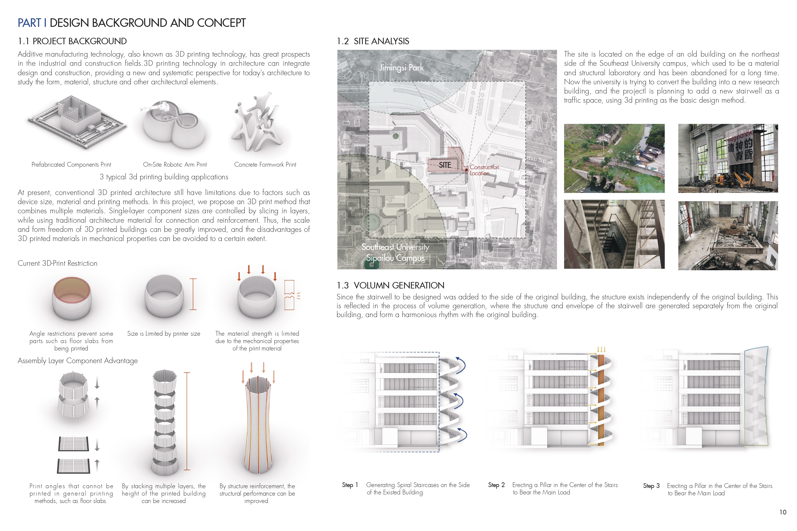
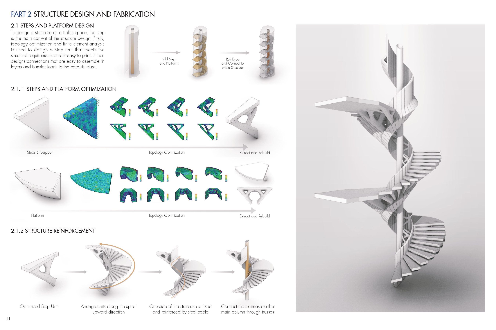
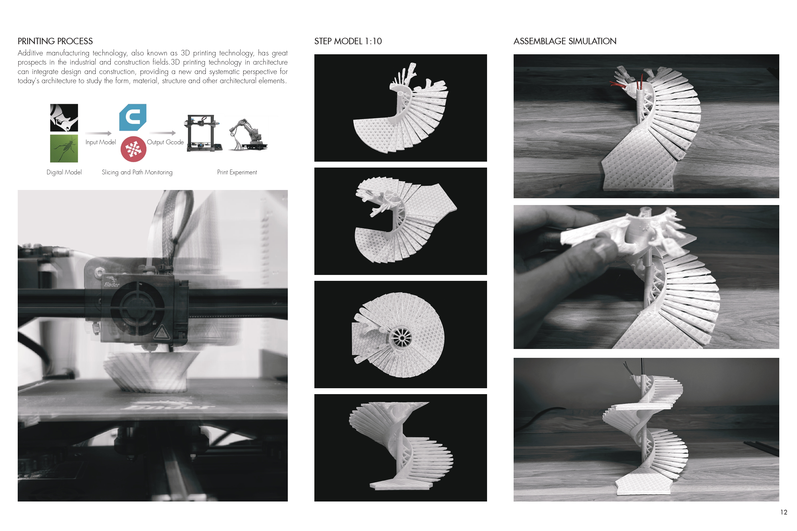
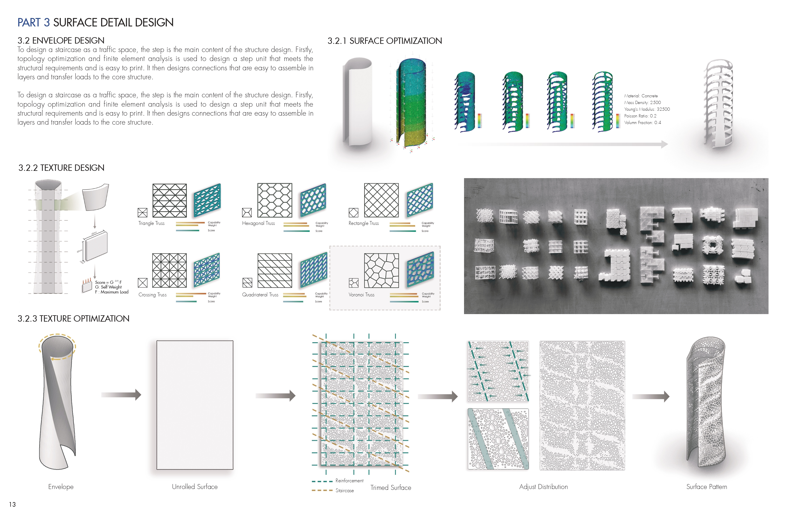
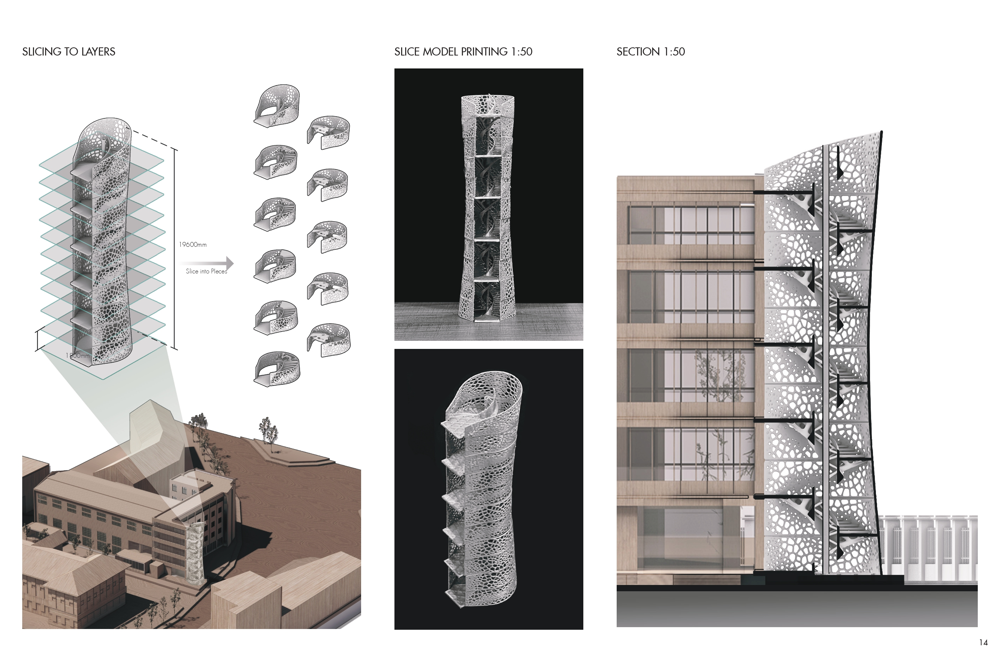

The Weaving Cloud
Prefabricated 3D printed architectural design explores breaking through the size limitations of 3D printing equipment by using a method of layered printing and structural reinforcement.




